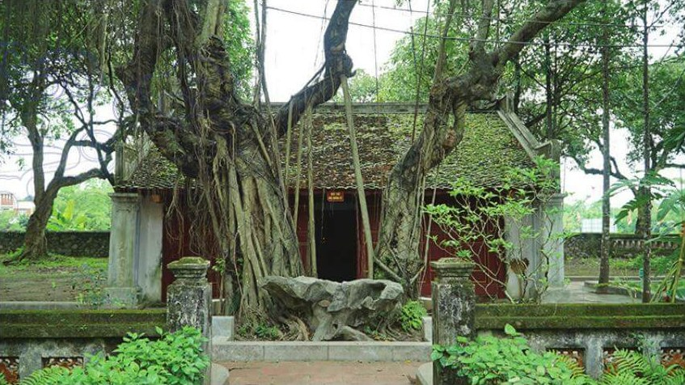

CỐ ĐÔ HOA LƯ
Nhà thờ Khổng Tử

Khi hành hương về với Khu di tích lịch sử và văn hóa Cố đô Hoa Lư, bên cạnh hệ thống đền thờ tôn vinh các bậc minh quân, tướng lĩnh tài ba của triều Đinh và triều Tiền Lê, du khách còn được bước vào một không gian linh thiêng, mang đậm dấu ấn triết lý nhân sinh phương Đông - đó là Nhà thờ Đức Khổng Tử.
Sự hiện diện của công trình này ngay trong khuôn viên đền thờ Vua Lê Đại Hành chính là một minh chứng sinh động cho bề dày lịch sử tiếp thu văn hóa của dân tộc Việt Nam. Hơn thế nữa, nơi đây còn là hiện thân của truyền thống hiếu học lâu đời cùng tinh thần tôn sư trọng đạo đã từ lâu đã thấm đượm vào tâm thức của mỗi người con đất Việt.
Đến với Nhà thờ Đức Khổng Tử, du khách không khỏi ngỡ ngàng trước vẻ đẹp cổ kính của kiến trúc nghệ thuật triều Nguyễn thế kỷ XIX. Toàn bộ hệ thống khung gỗ quý của công trình được chế tác hoàn toàn bằng kỹ thuật mộng truyền thống, tuyệt đối không dùng đinh sắt. Kỹ nghệ tinh xảo này cho ta thấy trình độ tay nghề bậc thầy của các nghệ nhân xưa.
Về mặt không gian, nhà thờ được bố cục với 2 công trình chính là: Bái đường và Hậu cung.
Nếu như Bái đường đón chào du khách bằng không gian rộng rãi, trang nghiêm, là nơi chuẩn bị các nghi lễ thành kính, thì Hậu cung lại mở ra một không gian thâm nghiêm, tĩnh mịch - nơi bài trí ngai thờ cùng bài vị của Đức Khổng Tử và bốn học trò xuất sắc của ông, gồm: Nhan Hồi, Tăng Tử, Tử Tư và Mạnh Tử.

Đức Khổng Tử (sinh năm 551, mất năm 479 trước Công nguyên), tự là Trọng Ni, sinh ra tại nước Lỗ, nay thuộc tỉnh Sơn Đông, Trung Quốc. Ông là bậc đại triết gia, nhà tư tưởng và nhà giáo dục lỗi lạc, đồng thời là người khai sáng Nho giáo – học thuyết chính trị, đạo đức từng đóng vai trò là bệ đỡ tư tưởng cho các triều đại phong kiến phương Đông. Xuyên suốt trong triết lý của ông là tư tưởng về chữ “Nhân”, kết hợp cùng thuyết Chính danh định phận và Tam cương ngũ thường. Theo quan điểm của Khổng Tử, một xã hội có chính danh mới là một xã hội ổn định, thái bình và thịnh trị. Trong đó, hệ thống Tam cương định rõ các mối quan hệ rường cột giữa vua - tôi, cha - con, vợ - chồng; còn Ngũ thường là năm chuẩn mực đạo đức mà người quân tử luôn phải rèn luyện, đó là: Nhân, Lễ, Nghĩa, Trí, Tín.
Không chỉ dừng lại ở một nhà chính trị hay triết gia, Khổng Tử còn là một nhà giáo dục vĩ đại. Với quan điểm giáo dục không phân biệt tầng lớp, ông luôn đề cao tinh thần hiếu học: làm ruộng phải học, làm quan cai trị lại càng phải học. Đây là một tư tưởng vô cùng tiến bộ, vượt trước thời đại trong xã hội bấy giờ.
Đồng hành cùng tư tưởng của người thầy vĩ đại là những học trò kiệt xuất, những người có công lớn trong việc bảo tồn và truyền bá học thuyết Nho gia:
Đứng đầu trong Tứ phối là Nhan Hồi (sinh năm 521 - mất năm 481 TCN), ông là người nước Lỗ, học trò xuất sắc nhất của Khổng Tử. Ông là người thông minh, nhanh nhẹn, học một biết mười. Người đời sau coi Nhan Hồi là người thừa kế lý tưởng của đạo Khổng. Nhan Hồi mất khi mới 32 tuổi, được Nho gia suy tôn là bậc “Thánh”, xếp hàng đầu trong Tứ phối.
Kế tiếp là Tăng Tử (sinh năm 504 – mất năm 435 TCN)
Trong số những học trò của Khổng Tử thì Tăng Tử là người hiểu biết cặn kẽ, lĩnh hội sâu sắc đạo lý xuyên suốt của học thuyết Khổng Tử. Ông để lại 2 tác phẩm kinh điển là Đại học và Hiếu kinh ghi lại lời Khổng Tử dạy học trò. Người đời coi học phái Tăng Tử bảo tồn được tinh túy của học thuyết Khổng Tử.
Học trò tiếp nối là Tử Tư (sinh năm 483 – mất năm 402 TCN)
Ông được coi là người thừa kế chính thống học thuyết của Khổng Tử. Sách Trung dung do Tử Tư biên soạn là tác phẩm danh tiếng tiêu biểu cho nhân sinh quan của học thuyết Nho gia. Tư tưởng của ông có vị trí quan trọng trong lịch sử tư tưởng Trung Quốc. Ông từng đem học thuyết Khổng Tử truyền bá rộng khắp. Nho gia thường gọi ông là Thuật thánh vì ông là người có công truyền thuật tư tưởng, sự nghiệp của Khổng Tử.
Và cuối cùng là Mạnh Tử (sinh năm 372 - mất năm 289 TCN), Ông là người nước Trâu, có ảnh hưởng lớn trong việc truyền bá, phát huy học thuyết của Khổng Tử, được các thế hệ nhà Nho đời sau suy tôn là Á thánh.
Trong không gian lịch sử tại Cố đô Hoa Lư, Nhà thờ Đức Khổng Tử không đơn thuần là chốn thờ phụng các bậc tiên hiền của Nho giáo, mà còn là nhịp cầu nối liền quá khứ với hiện tại. Nơi đây tạo cho các thế hệ mai sau có cơ hội tìm hiểu về những giá trị triết lý nhân sinh sâu sắc, thấm nhuần đạo lý làm người và tinh hoa văn hóa của các bậc tiền nhân.
Có thể khẳng định rằng, việc trân trọng đưa Đức Khổng Tử và các học trò xuất sắc vào thờ tự trong lòng di tích lịch sử quốc gia chính là minh chứng rõ nét cho truyền thống cởi mở, chủ động tiếp thu có chọn lọc những tinh hoa văn hóa nhân loại để làm phong phú nền văn hóa Việt Nam đậm đà bản sắc dân tộc.